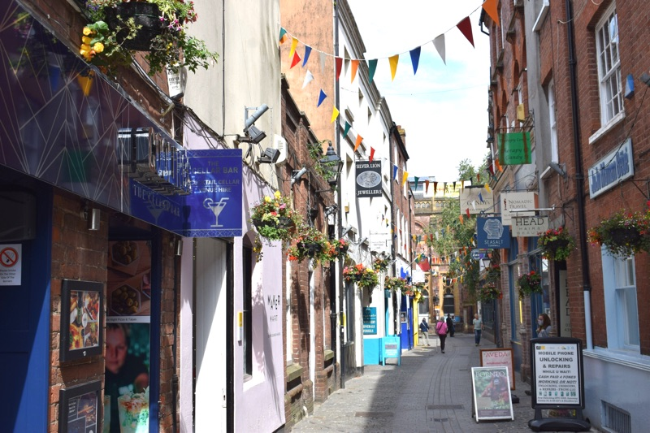
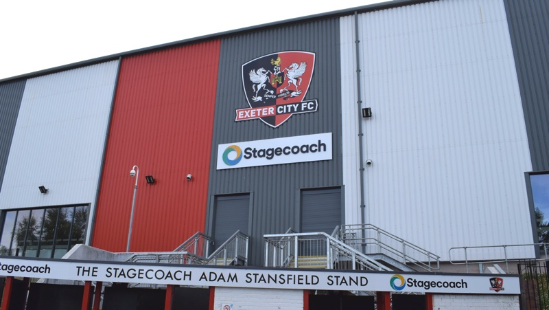
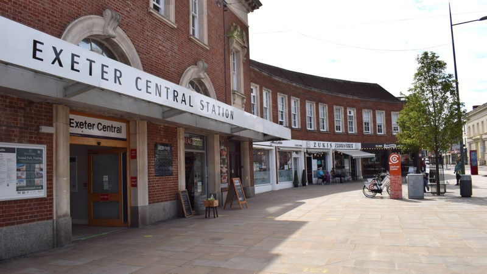

An assembly of the great and the good described by Exeter City Council’s chief executive, Karime Hassan, as “conscientious, talented people from all backgrounds who want to work in the best interests of the city” has been meeting in private in recent months.
Its membership is unelected, it does not publish its discussions or decisions and it is taking responsibility for major policies which will determine Exeter’s future.
The city council has had a predilection for such bodies for some time: recent arrangements have apparently included the Greater Exeter Visioning Board, the Exeter Local Transport Steering Board and the Greater Exeter Strategic Plan working group.
Each of these other attempts at collaboration, however opaque, have largely been driven and constituted by local authorities. This new initiative goes much further in its scope, its membership and its agenda.
Exeter College Hele Road campus construction site
What is now known as the Liveable Exeter Place Board started life in July 2019 when the council’s executive agreed a recommendation from its chief executive, Karime Hassan, to establish a Liveable Exeter Garden City Board.
The purpose of the new board was described as “the vehicle through which Exeter will ensure that the desired transformational housing agenda known as Liveable Exeter Garden City is achieved” and “to support Exeter in its mission to be recognised as a leading sustainable city and global leader in addressing the social, economic and environmental challenges of climate change and urbanisation”.
The garden city programme vision had been approved by the executive and the full council in February 2019.
Mr Hassan’s recommendation continued: “The overarching aim of the board is to provide its constituent local authorities (Exeter and Devon County Council) and partners with a forum in which to address collaboratively issues relating to housing delivery, place shaping, economic development, clean growth, and carbon neutral development at a city and sub-regional level and to enable collective decision-making on issues that require agreement from the constituent authorities and other key public sector stakeholders” (our emphasis).
Mr Hassan nevertheless stressed that nothing in the proposal was to be read as incorporating any executive functions properly exercised by councils.
The recommendations were adopted by Exeter City Council in July 2019. The chief executive was authorised to settle the terms of reference and to identify suitable members for the board, then report back to the executive when this was done.
No such report was ever received. The leader of the city council, Phil Bialyk, justified this at the June Executive committee meeting in response to a question from Councillor Diana Moore by saying: “The original draft terms of reference agreed by Council have not been amended in any meaningful way. Hence we have not reported back to Executive.”
 Independent small businesses in Gandy Street
The failure to report back to the executive meant that the membership of the board was not made public.
An enquiry to the council’s press office from Exeter Observer elicited a membership list. We subsequently established that a significant number of city councillors did not know who was on the board, a point only recently rectified at a private briefing for elected members.
The chair is Sir Steve Smith, the about-to-retire vice chancellor of Exeter University. He has been a non-executive director of the Unite Group since April 2020. Unite is a major provider of purpose-built student accommodation, including at three locations in Exeter.
He is also a board member of the Heart of the South West Local Enterprise Partnership (HotSW LEP) which describes its role as “the main thought-leader influencing economic development in the HotSW area”. It aims to deliver the Local Industrial Strategy alongside “transformational opportunities” focussed on nuclear power, aerospace and maritime industries. It is responsible for many developments across the region including numerous road building schemes.
A significant number of other place board members have known property and land interests.
Steve Hindley, until recently chair of the HotSW LEP, is chair and chief executive of Midas Group, a regional construction company that has built, among other things, several student accommodation blocks in Exeter and elsewhere.
Paul Crawford is chief executive of Livewest, a provider of affordable housing in the south west. He is also chair of lobby group Homes for the South West which argues that the government should prioritise the sale of public sector land for affordable housing.
The Earl of Devon is a major local landowner. His family seat at Powderham Castle comprises 3,500 acres of land including four farms, 33 houses and three miles of foreshore. He is an elected hereditary member of the House of Lords and a partner at legal firm Michelmores.
Julian Tagg, president of Exeter City Football Club is a director of OTR (Exeter) Ltd, a property management company.
Charles Johnston, Sport England’s Executive Director of Property, is a former Director of Construction and Facilities at Sainsbury’s.
Glenn Woodcock is a director of Oxygen House Group which owns Grenadier Estates, a residential and commercial property development company. He is also a director of Global City Futures, the consultancy behind Exeter City Futures, and sits as a governor of Exeter College alongside fellow place board members John Laramy and Matt Roach.
Tony Rowe, chairman and chief executive of the Exeter Chiefs also holds directorships in property companies.
Lady Studholme, chair of the trustees at the Northcott Theatre is, according to her Linkedin profile, a partner in the substantial Perridge Estate owned by her husband, Sir Harry Studholme, Baronet.
John Laramy, principal and chief executive of Exeter College is also a HotSW LEP board member as well as a member of the Chartered Institute of Building.
Matt Roach is managing director of Exeter International Airport and also chair of Exeter Chamber of Commerce & Industry, which represents the interests of numerous companies which are involved in property development in and around Exeter.
The major public sector institutions in the city are also represented: University of Exeter, Exeter College, Met Office, Royal Devon & Exeter hospital trust, Devon & Cornwall Police and both Devon County Council and Exeter City Council. Most of these organisations are substantial land and property owners in their own right.
At some point between July 2019 and May 2020 the Liveable Exeter Garden City Board morphed into the Liveable Exeter Place Board. A report to the city council’s executive meeting in June about plans for the city’s recovery from the impacts of the COVID-19 virus explained the board’s role in the following terms:
“The Liveable Exeter Place Board brings together all the major organisations in the city as well as private and voluntary sector figures. It allows for frank and candid confrontation of the issues they face in a manner that supports collaboration through a common purpose. The issues involved with a recovery plan for the city are broader than the city council and will benefit from being adopted by the place board.”
The recovery plan is split into seven work streams which were already active at the time of the report to councillors. Six are chaired by place board members:
- Business support - Matthew Roach (Managing Director, Exeter Airport)
- City centre - John Laramy (Principal, Exeter College)
- Visitor economy - Charles Courtenay (Earl of Devon)
- Transport - Mike Watson (Managing Director, Stagecoach South West)
- Construction and development - Sir Steve Smith (Vice-Chancellor, University of Exeter)
- Community wellbeing - Dinah Cox (Chair, Devon Community Foundation)
Each work stream has a lead council officer and is overseen by a member of the council’s senior management board which itself meets in private. The report did not identify a chair for the education work stream
At its June meeting the council’s executive agreed that the board should “adopt” the city’s coronavirus recovery plan and at the same time that it should also adopt the “Net Zero” Exeter plan intended to make the city carbon neutral by 2030. Bizarrely, this second decision was recorded as the place board adopting the “Liveable Exeter Place plan”.
At its July meeting the council’s executive then agreed to add oversight of the Sport England local delivery pilot to the board’s portfolio. This gives the Liveable Exeter Place Board responsibility over four major city council policies and programmes (including the original garden city project).
 Exeter City Football Club St James Park Stagecoach Adam Stansfield Stand
Exeter Observer’s initial enquiries revealed that the place board did have specific terms of reference but the city council’s spokesperson said only that: “its principal focus is to support the council in achieving and promoting its vision for the city”.
In response to a question about openness the spokesperson said: “Minutes of the board are not published owing to the commercial and sensitive nature of some discussions – but any matters requiring council decisions or scrutiny would be progressed through the normal decision-making pathways and minutes produced accordingly”.
Exeter Observer subsequently wrote to all non-council board members on the list provided by the council. We asked each member two questions: what they saw the board’s role as being in practice, and how they would describe their personal contribution to the board’s work.
Only two replied, saying in effect that they could not comment until the board had discussed the issues we raised. A senior council officer then made contact to say that the board would collectively discuss our questions at its next meeting on 8 July.
We responded by requesting that our concerns about the confidentiality of board proceedings would be addressed. This request was made in the context of a remark by Councillor Ollie Pearson, the council’s executive member for leisure and physical activity, at a Strategic Scrutiny committee meeting on 2 July when he referred to the place board as providing “the best and most transparent oversight” of the Sport England pilot.
The place board met on 8 July, after which the city council issued the following statement in the name of its chief executive and growth director, Karime Hassan:
“We are hugely grateful to the board for giving up their valuable time. They have adopted a vision of Exeter that is based on the premise of better life for all.
“It is a vision that a district council couldn’t achieve on its own. There are all manner of challenges that the city needs to overcome.
“Exeter is stronger for having conscientious, talented people from all backgrounds who want to work in the best interests of the city.
“It shouldn’t be confused with a district council. Any decisions requiring council permission or funding are part of a transparent and democratic process that is the envy of the world.”
Had the date been right, the final sentence might reasonably have been viewed as an April Fool’s joke: the city council cut scrutiny of its own decision-making in October last year.
 Independent small businesses beside Exeter Central Station
The city council’s acknowledgement that it cannot meet the challenges facing Exeter on its own is welcome and realistic. The council has set itself a huge and far-reaching agenda which, if implemented, would lead to major changes in the shape of the city and the way people interact with it.
Setting up a group of advisers in response to such challenges is an approach with ample precedent in central government, where transparent expert advisory committees are (or at least were) a standard feature of policy-making.
In practice, however, the Liveable Exeter Place Board has not got off to a good start against some of the claims made for it.
The council claims that the board’s membership is “diverse” but the facts do not bear this out. For example, in terms of gender, it is male-dominated: only four of its 24 members are women. In terms of representation, its business members are from the construction, tourism, transport and sport sectors, with the rest from the usual pool of public sector bodies with a dash of high culture thrown in.
There is no seat round the table for the retail, food or hospitality sectors, nor for the small, independent businesses that are integral to the city’s economy. No one on the board appears able to claim recent experience of the hardship, disadvantage and poverty experienced by many Exeter residents. No one speaks for community groups (the Devon Community Foundation is a grant-giving body).
Nor does council coyness about the board’s role and activities inspire trust. Roles sketched out for the original board in July 2019 included (our emphasis):
- Develop and set joint investment strategies for the city and sub-region
- Develop an infrastructure plan in support of the Liveable Exeter Garden City and as and when required the Greater Exeter Strategic Plan and associated sub-regional transport strategy
- Consider and prioritise bids for external funding, including leading on housing, industrial and other appropriate deals
- Consider, approve and implement decisions relating to Exeter and as appropriate subregional investment, including expenditure of external funding within the sub-region.
We do not know whether these functions found their way into the place board’s terms of reference, as the council has not provided that level of detail. If they did, then these are important matters in which there is significant public interest. Not all these actions will necessarily come to the city or county councils for formal decisions to be made and so will not be exposed to “a transparent and democratic process that is the envy of the world”.
The composition of the board also raises questions about level playing fields and competitiveness. Are, for example, the construction and transport companies whose bosses sit on the board getting an inside track into development and funding plans not available to their competitors? There is no suggestion that they are, but there is no objective reassurance that they are not.
The city belongs to all of us who live or work here, not just a group of selected “leaders”. Exeter Observer challenges the Liveable Exeter Place Board to publish, as a minimum, the dates of its meetings and their agendas, the attendees at each meeting, declarations of interest, a summary of what was discussed and any decisions taken or advice tendered to local authorities.
Without these minimal accountability provisions, suspicion and lack of trust will inevitably undermine the potential for good that the board might otherwise have.
Correction: This article originally said that John Laramy, principal and chief executive of Exeter College, is also a director of Exeter City Futures. In fact Rob Bosworth, vice principal and deputy chief executive of Exeter College, is a director of Exeter City Futures.
Update: The following additions to the board’s membership were reported to the city council’s executive at its meeting on 1 September 2020:
- The Right Reverend Robert Atwell, Bishop of Exeter
- Mike Gallop, Western route director, Network Rail
- Claire Kennedy, licensee and curator, TEDxExeter
- Kalkidan Legesse, social entrepreneur and managing director at Sancho’s shop
Sir Steve Smith has also since retired as vice-chancellor of the University of Exeter, but remains chair of the Liveable Exeter Place Board.
In addition to his non-executive directorship at student accommodation provider Unite Group, he has been appointed the UK’s first International Education Champion.
A seat on the Liveable Exeter Place Board has been created for his successor as vice-chancellor, Professor Lisa Roberts.